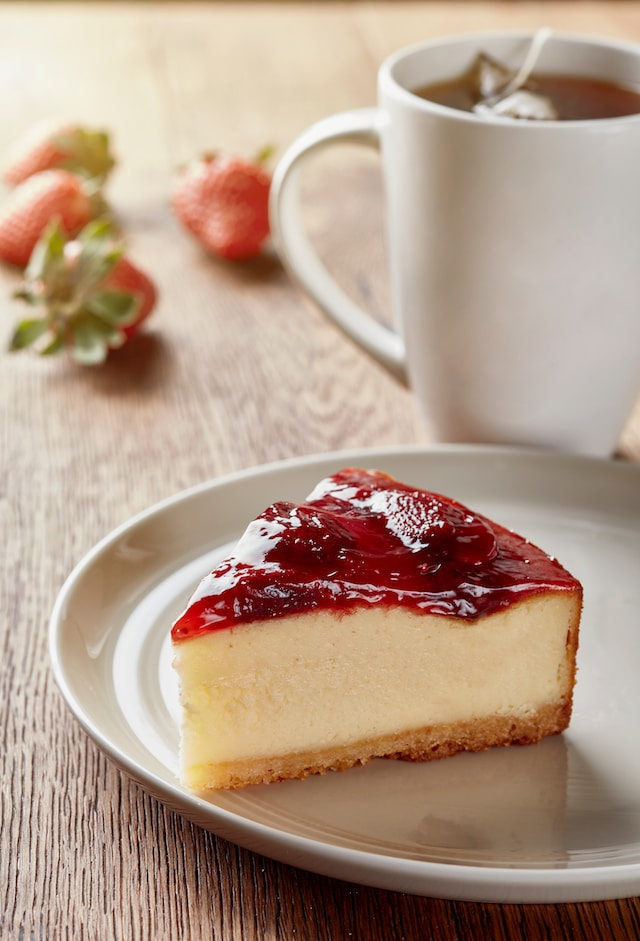

Cheesecake
New York cheesecake with raspberries
Delicious cheesecake recipe specially for cold winter days

Photo by
Orkun Orcan
auf
Unsplash
Ingredients
Cake base
180g digestive biscuits
75g butter
Cake filling
1kg Philadelphia cream cheese
160g sugar
30g corn starch
2 eggs
13g vanilla sugar
1dl full cream
Raspberries
Recipe
Finely crush the digestive biscuits and mix it with the melted butter
Spread the mixture regularly in a cake form
Mix together the cream cheese, sugar and corn starch
Then add the eggs, vanilla sugar and full cream and mix well
Add the mixture to the cake form
Puree the raspberries and add it to the top of the cake
Back for 90 minutes at 160°C
Put the cake in a fridge for 4h
Return to main page